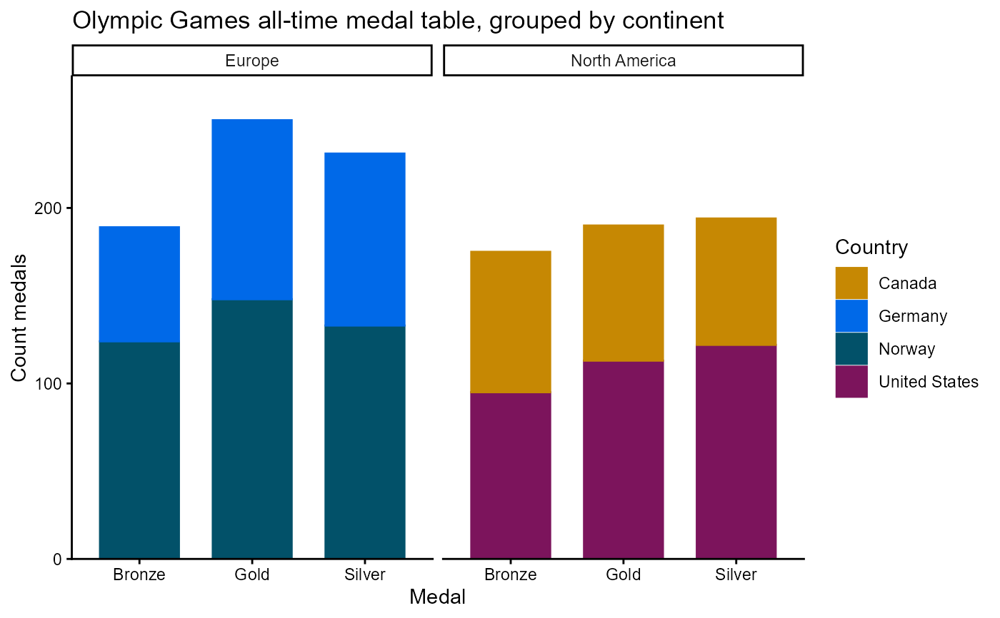

Create a stacked column geometry layer for hd objects. Each stack is a facet
(sub-panel) containing one or more series. The stack argument specifies
the column in the data that defines the stacks. The group aesthetic in
hd_spec() defines the series within each stack. The stacking
argument controls how the stacks are rendered: "normal" (default) stacks values
on top of each other, while "percent" stacks values as percentages of the total
stack height.
Usage
hd_geom_stacked_column(stack, stacking = c("normal", "percent"), ...)Arguments
- stack
Character. Column name for the stack variable. Each unique value in this column creates a separate stack (facet) containing all series with that stack value. Required.
- stacking
Character. Stacking mode for the column geometry. One of
"normal"(default) or"percent". See Highcharts documentation for details: https://api.highcharts.com/highcharts/plotOptions.column.stacking- ...
Additional optional arguments forwarded to the geom function (e.g.
show_line = FALSE,single_colour = "#025169"). Rungeom_args("arearange")for the full list.
Examples
# Example data: medal counts for four countries across three medal types
olympics <- data.frame(
Country = rep(c("Norway", "Germany", "United States", "Canada"), each = 3),
Continent = rep(c("Europe", "Europe", "North America", "North America"), each = 3),
Medal = rep(c("Gold", "Silver", "Bronze"), times = 4),
Count = c(148, 133, 124, 102, 98, 65, 113, 122, 95, 77, 72, 80)
)
# Define Specification and Options
spec_st <- hd_spec(olympics,
x = "Medal",
y = "Count",
group = "Country"
)
opts_st <- hd_opts(
title = "Olympic Games all-time medal table, grouped by continent",
subtitle = "Source: Olympics",
ylab = "Count medals"
)
# Interactive — stacks are separated by continent
hd_make(spec_st, "stacked_column", opts_st, stack = "Continent")
# Static ggplot2 — stacks are separated by continent
hd(spec_st, backend = "ggplot2") +
hd_geom_stacked_column(stack = "Continent") +
hd_opts(title = "Olympic Games all-time medal table, grouped by continent", ylab = "Count medals")
